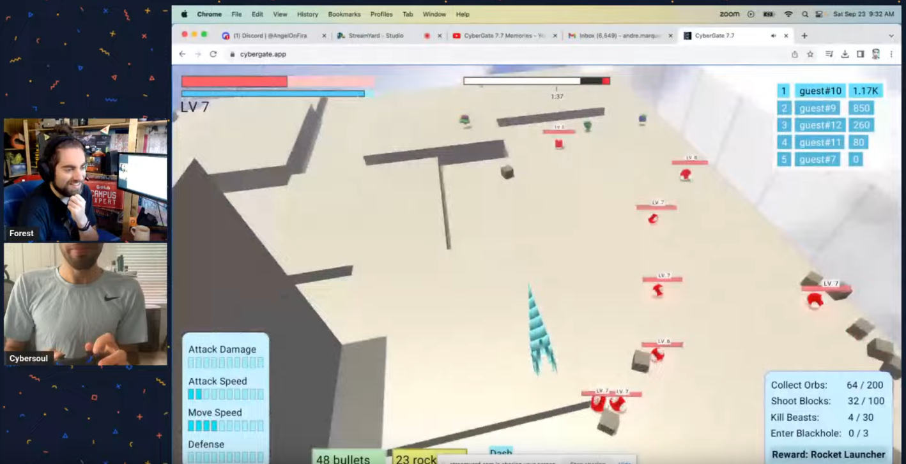

Rust Gamedev Meetup 30

The 30th Rust Gamedev Meetup took place on September 23rd. You can watch the recording of the meetup here on YouTube. The meetup will take place on the Rust Gamedev YouTube and Twitch. The meetups take place on the second Saturday of every month via the Rust Gamedev Discord server and are also streamed on Twitch.
Talks
Blue Engine | @ElhamAryanpur

Updates about the Blue Engine project and its 0.5.0 release.
Links:
Cybergate | @cybersoulK

An overview of Cybergate, a multiplayer game being developed for native and browser play.
Links:
no_std: ?no_problem | @kpreid

An introduction to making your Rust crates
no_stdcompatible, and why you might want to do this.
Links: